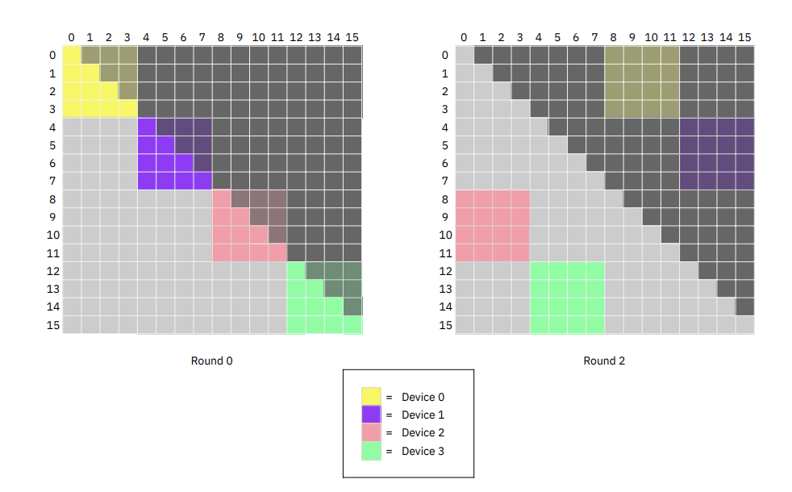
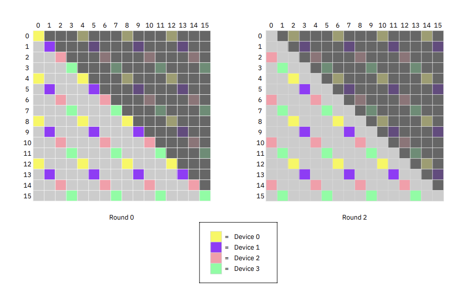
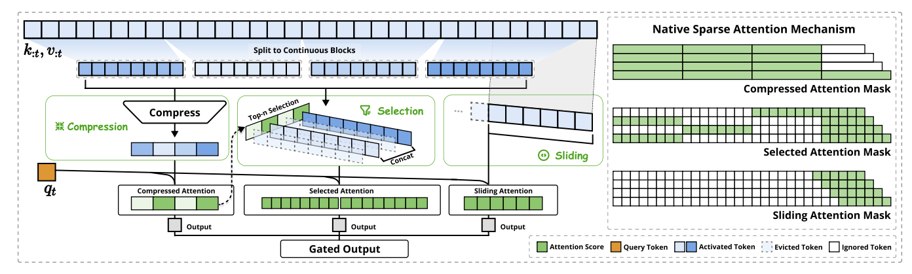
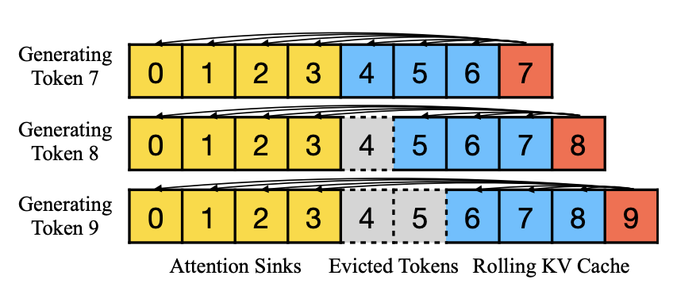

Kavyanjali Agnihotri
Legal contracts, research papers, full codebases in a single pass. Chunking creates seam artifacts; full context does not.
Multi-step agent traces accumulate tool outputs, memory scratchpads, and prior turns. Context grows with task complexity.
A single high-res video frame or interleaved image sequence easily reaches tens of thousands of tokens.
Llama-3.1-8B: 32 layers · 8 KV heads · head dim 128 · FP32 → 0.25 MB per token
| Sequence | KV Cache | Note |
|---|---|---|
| 1,000 | 0.25 GB | Fits easily |
| 10,000 | 2.5 GB | Comfortable |
| 128,000 | 32 GB | Full H100 |
| 1,000,000 | 250 GB | 3× H100s, KV only |
Prefill ingests the full prompt before generating any output.
Attention is O(n²): every token attends to every other token.
Attention score computations per head per layer (log scale)
| Context | Ops (per head/layer) | Relative |
|---|---|---|
| 4K tokens | 16M | 1× |
| 128K tokens | 16.4B | 1,024× |
| 1M tokens | 1T | 62,500× |
A 1M-token prompt can take 30+ minutes to prefill on hardware that handles 4K tokens in under a second.
Prefill is compute-bound (unlike decoding, which is memory-bandwidth-bound).
Quadratic scaling makes it the dominant bottleneck.
Mathematically identical output to full attention. Distribute the work, not reduce it.
Compute a subset of attention. Trade small accuracy loss for large efficiency gain.
Context Parallelism: exact attention distributed across devices
By splitting the sequence across GPUs, each device holds only a fraction of the KV cache. Combined correctly, the result is mathematically exact to full attention.
1 GPU: 32 GB — impossible once weights are loaded
4 GPUs: 8 GB each — fits comfortably
8 GPUs: 4 GB each — room for larger batches
GPU 1 holds Q₁ and K₁ but true global attention needs all keys. Softmax requires the sum of exponentials across the entire sequence — GPU 1 can't compute it with only K₁.
Attention between a query block and any set of KV blocks can be computed in any order — as long as softmax statistics (running max, sum of exp, weighted output) are correctly merged after each block.
Rotate KV blocks around a GPU ring. Accumulate partial softmax statistics using an online algorithm that can merge blocks exactly and in any order.
1. Split sequence across N GPUs. Each GPU holds a fixed query block Qi.
2. Over N−1 rounds, KV blocks rotate clockwise: GPU i sends to GPU i+1, receives from GPU i−1 simultaneously.
3. Each GPU computes blockwise attention against the current KV block, accumulating partial softmax statistics.
4. After N−1 rounds, every GPU has seen all KV blocks. Output is bit-for-bit exact.
Q blocks (blue) stay fixed · KV blocks (red) rotate clockwise
Softmax scores depend on the global maximum logit m*. When a new KV block arrives with a higher max m', we rescale all prior partial sums by exp(m_old − m_new). This corrects the shifted denominator exactly — no approximation.
No GPU can finalize its output until all N−1 KV blocks have rotated through. Round k feeds into round k+1. This is the fundamental latency cost of Ring Attention.
Standard softmax cannot be split. Online softmax maintains running statistics that can be merged in any order with zero error.
Output is bit-for-bit identical to full single-device attention. Zero approximation. The only cost is KV block communication overhead between GPUs.
Each GPU stores exactly:
1 query block (stationary) + 2 current K,V blocks + 2 incoming K,V blocks (buffered) + 1 output accumulator
| Compute time | \(\dfrac{4dc^2}{F}\) |
| Transfer time | \(\dfrac{4cd}{B}\) |
While GPU i computes on the current KV block, it simultaneously sends that block to GPU i+1 and receives the next from GPU i−1. If compute time ≥ transfer time, there is zero communication overhead.
If a model supports context s on 1 GPU, Ring Attention supports N·s on N GPUs with identical flop utilization. Demonstrated beyond 100M tokens without approximation.
Causal attention masks all future tokens — theoretically halving total ops. But Ring Attention with contiguous blocks cannot exploit this due to workload imbalance.
With contiguous blocks, some rounds give GPU A entirely masked (zero work) while GPU B gets entirely unmasked (full work). GPUs sync each round, so the slowest sets the pace — the 2× savings disappears.

(a) Ring Attention — Round 2 shows some GPUs with entirely masked (white) blocks

(b) Striped Attention — Every GPU maintains balanced half-filled patterns every round
Figure 4, Brandon et al. 2023. Colors = which GPU computes each query/key pair. White = masked by causal mask. Striped eliminates idle rounds entirely.
Brandon et al., Striped Attention: Faster Ring Attention for Causal Transformers, 2023Tokens are interleaved across devices instead of assigned in contiguous blocks. For N=4:
Every GPU holds tokens distributed uniformly across the full sequence — causal mask is roughly half-filled every round.
Attention is permutation-equivariant in the key-value dimension. Permute tokens before splitting, unshuffle the output after — identical to full causal attention.
| Hardware | Sequence | Speedup over Ring |
|---|---|---|
| 8× A100 | 256K | 1.45× |
| 16× TPUv4 | 786K | 1.65× |
Speedup grows with sequence length and degree of sequence parallelism. At 786K tokens on 16 TPUs, 1.65× translates directly to reduced training cost.
Reduce computation itself rather than distributing it
First sparse attention deployed in production at scale (DeepSeek-V3.2). Unlike prior methods that bolt on sparsity after training, NSA is trained from scratch — the model learns which tokens matter.
Post-hoc sparse methods either scatter memory accesses (destroying arithmetic intensity, no real speedup) or introduce train/inference mismatch. NSA is hardware-aligned and natively trainable.
Prefill/training: compute-bound (high intensity). Decoding: memory-bound (must reload full KV cache per step). NSA is co-designed for both regimes.
Token blocks compressed into single representations by a learnable MLP with overlapping strides. Panoramic view of the full context at low compute cost.
Compression scores reused to rank uncompressed blocks. Top-k selected at full resolution. Blockwise and GQA-aligned — contiguous reads, FlashAttention-friendly.
Fixed window of recent tokens in an isolated branch — prevents the model taking a "local shortcut" and skipping the global branches during training.
Three branch outputs combined by a learned gate. The GQA group constraint — all heads select identical blocks — is not just algorithmic: it is a hardware prerequisite that keeps KV reads contiguous and eliminates redundant memory transfers in the custom Triton kernel.

Figure 2, Yuan et al. 2025. Three parallel branches: compressed (coarse global), selected (important exact blocks), sliding window (local). Green tiles = computed; white tiles = skipped. All three outputs are merged by a learned gate.
Yuan et al., Native Sparse Attention: Hardware-Aligned and Natively Trainable Sparse Attention, DeepSeek 2025FlashAttention streams contiguous KV blocks. Sparse selection needs disjoint fragments for different query positions — scattered reads destroy arithmetic intensity.
Flips the strategy: loads all heads of a GQA group at once, then fetches the contiguous KV blocks they all share. Zero redundant transfers — FlashAttention-level intensity on sparse patterns.
| Metric (64K context) | NSA vs Full Attn |
|---|---|
| Training throughput | 9× faster |
| Decoding speed | 11.6× faster |
| General benchmarks | matches or exceeds |
| Long-context retrieval | perfect accuracy |
| Chain-of-thought math | exceeds Full Attn |
Sparse patterns learned natively during pretraining: the model discovers which tokens genuinely matter, reducing attention noise.
As tokens travel through layers, their hidden states — each token's internal vector representation — stop changing significantly. By the midpoint of the model, each token's representation is already close to its final-layer state.
For prompt tokens in layers l+1 to L: attention, MLP, Q projection, and output projection are all skipped. Only the K and V projections run, using h(l) as input. Decoding runs all layers unchanged.
Instead of a separate KV per skipped layer, AcrossKV shares one KV cache across several consecutive skipped layers — compresses memory footprint at the cost of slightly more approximation.
The architectural change initially drops accuracy. Recovery: freeze the original model as "teacher," fine-tune only the KV projection weights of skipped layers — less than 10% of total parameters. Train on fewer than 1B tokens. Completes in hours, not weeks.
SwiftKV only changes which data feeds into which projection matrix, not the operations themselves. Drops into vLLM and SGLang without custom kernels or modified serving stacks.
| Metric | Result |
|---|---|
| Prefill compute reduction | 25–50% |
| Aggregate throughput | up to 2× |
| Time per output token | 60% lower |
| Normalized throughput | 560 TFlops/GPU |
| Llama-3.1-70B tokens/sec | 16K tokens/s |
| Benchmark quality loss | <2% |
| Model size range tested | 3B to 405B |
RAG and summarization: long prompts, short outputs. Prefill dominates total time
Open source: Arctic Inference plugin for vLLM from Snowflake · Production-deployed in Arctic model serving
Qiao et al., SwiftKV, 2024 | Arctic Inference plugin for vLLMLLMs are needed for long-running conversations and streaming applications, but KV cache grows linearly with sequence length — unsustainable. The question: can we keep memory constant without losing coherence?
Window Attention: Keep only the most recent N KV states — constant memory. But once the sequence exceeds cache size, perplexity explodes. Position embeddings no longer match training; the model collapses.
Sliding Window + Recomputation: Rebuilds KV states for recent tokens at each step. Strong quality, but the quadratic recomputation cost makes it 22× slower than needed — impractical for real streaming.
Both approaches miss a deeper problem. Softmax requires attention scores to sum to 1. When no token is a strong match, the model "dumps" spare attention onto the initial tokens as a "sink" — even if those tokens carry no semantic relevance. Evicting these sinks removes the dump site and destabilizes softmax.
Transformers assign disproportionately high attention weight to the first few tokens in every sequence, regardless of their content. This is not a curiosity — it is load-bearing. Softmax must distribute probability mass somewhere; initial tokens become the default dump site.
Any window attention scheme that evicts the initial tokens removes the sink. Without a place to dump spare attention, softmax becomes unstable and model quality collapses — explaining the window-attention failure exactly.
Permanently retain the first 4 tokens (attention sinks) in the KV cache alongside a rolling window of the most recent tokens. When new tokens arrive, evict only from the rolling window — never the sinks. Memory stays constant; softmax stays stable.
Assign position indices relative to cache slots, not original sequence positions. The model permanently believes it is reading a short document within its training window — it never hits the training-length limit, enabling truly infinite generation.

Figure 4, Xiao et al. 2023. KV cache = attention sinks (first 4 tokens, always retained) + rolling window. Position indices are relative to cache slots.
Sinks serve as a mathematical dump for spare attention — the model ignores the artificial positional distance between sinks and recent tokens, as long as recent tokens maintain correct relative spacing. This enables contexts of 4M+ tokens with a fixed KV cache, a 22.2× speedup over sliding window recomputation, with no fine-tuning required across Llama-2, MPT, Falcon, and Pythia.
How production systems combine these ideas
Layer groups split across servers over slow inter-server links. Server 1: layers 1–25, Server 2: 26–50, etc. Naive PP: Server 1 processes the full 100K prompt while Servers 2–4 sit completely idle. This is the pipeline bubble.
Slice the prompt into 4K-token chunks. Server 1 processes chunk 1 through layers 1–25, passes it to Server 2, immediately picks up chunk 2. By the time chunk 1 reaches Server 4, all four servers work simultaneously on different chunks.
Inside each server, GPUs use NVLink (~900 GB/s) to run Ring/Striped Attention on each chunk in parallel. NVLink makes per-step KV rotation cheap. Cross-server PP uses slower InfiniBand but avoids KV rotation entirely.
Within each server: CP (NVLink) for sequence splitting. Across servers: Chunked PP for model depth. Software topology matches hardware topology. GPUs never idle, never OOM.
Ring and Striped Attention as the primary strategy. Helix (NVIDIA, 2025) proposes replacing the ring with All-to-All communication: every GPU sends its partial attention output and log-sum-exp factor to every other GPU simultaneously, reducing per-round latency.
Chunked PP favors model-layer sharding across servers. Maps better to cluster topologies where inter-server bandwidth is constrained relative to intra-server NVLink speed.
Both teams acknowledge the future is hybrid CP × PP. The debate is which dimension to optimize first given today's hardware. NVLink makes CP cheap within a server; InfiniBand makes PP cheaper across servers.
| Method | Loss | Gain | Best Workload |
|---|---|---|---|
| Ring Attention | None | N× memory | Training, exact inference |
| Striped Attention | None | 1.65× over Ring | Causal LM training |
| NSA | Minimal | 9–12× at 64K | Pretraining, long decode |
| SwiftKV | <2% | 2× throughput | RAG, summarization |
| StreamingLLM | Moderate | 22× vs recompute | Infinite streaming |
For most practical workloads: yes. A 128K-token request that once required 30+ minutes of prefill and 32 GB of KV cache now runs at practical latency on standard clusters. The 1M-token frontier is still being pushed.
Questions?